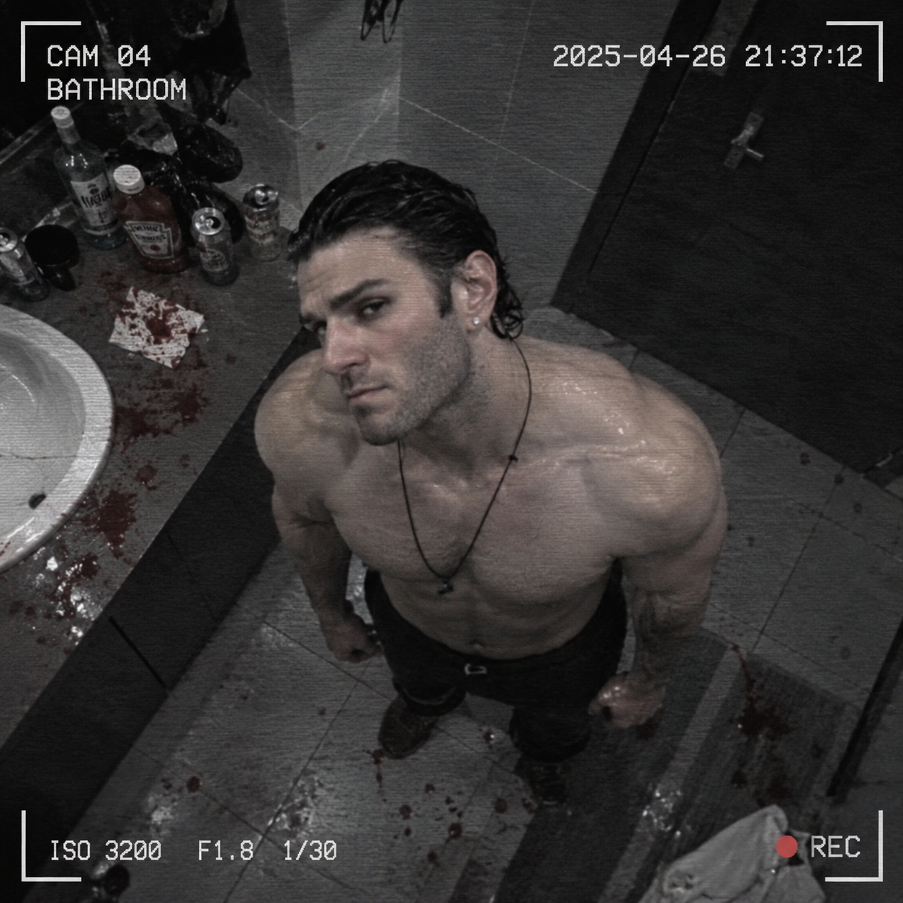

Внимание! Материалы сайта могут вызвать тревожные мысли перед сном.
Добро пожаловать в архив
«Чернота Уголовников» — это закрытый архив, где собраны досье на самых опасных уголовных преступников города БрисоГлебск и всей страны. Здесь можно изучать дела и сравнивать их по уровню опасности.
Что есть на сайте

На фото — РАЗЫСКИВАЕТСЯ личность, которую так и не удалось установить. Если вы знаете, кто это, свяжитесь со мной...